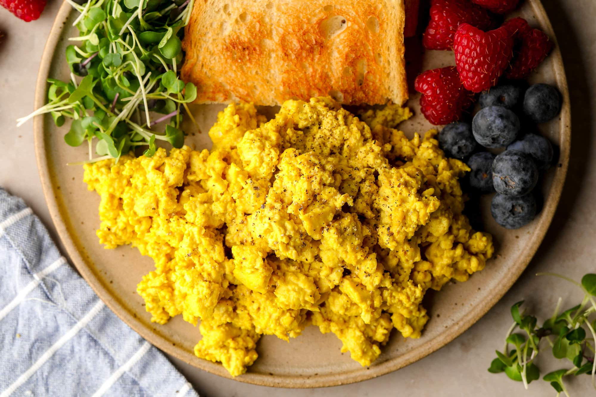

Scrambled Tofu

Here is a recipe for my tasty scrambled tofu!
It can be enjoyed on some toast, maybe with some avocado or houmous.
Ingredients
- 1 tsp Butter
- 1 Block Tofu
- 1 tsp Turmeric
- 1 tbsp Soy sauce
- 1 tsp Chilli flakes
- 1 tbsp Soya milk
Instructions
- Melt butter in pan.
- Once butter is melted, break tofu with hands into pan.
-
Cook for a couple minutes, then add turmeric, chilli flakes and soy
sauce.
-
Cook for a couple more minutes. Stir in soya milk and turn off the heat.